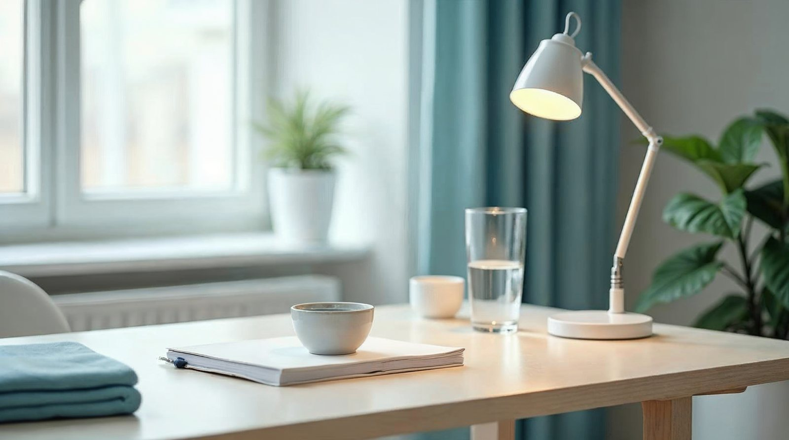
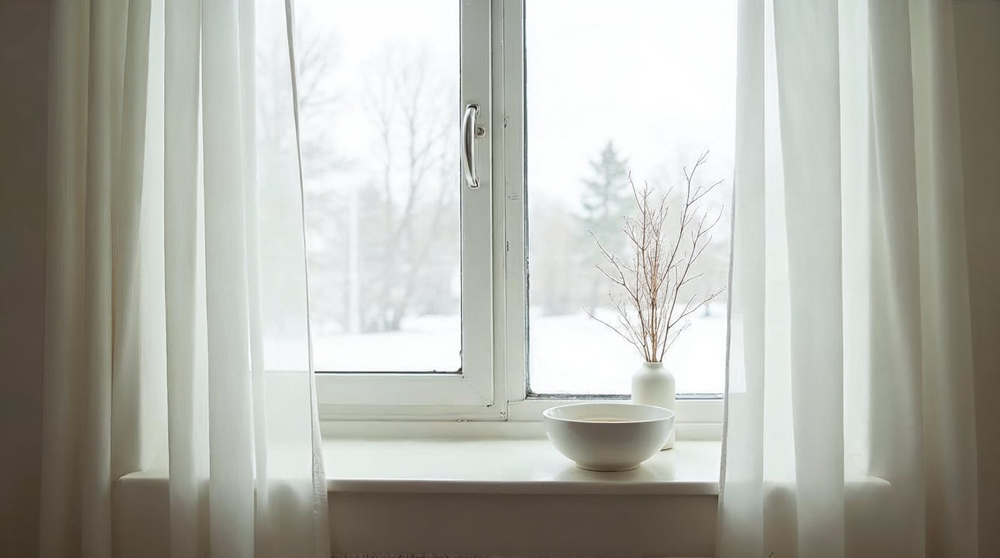
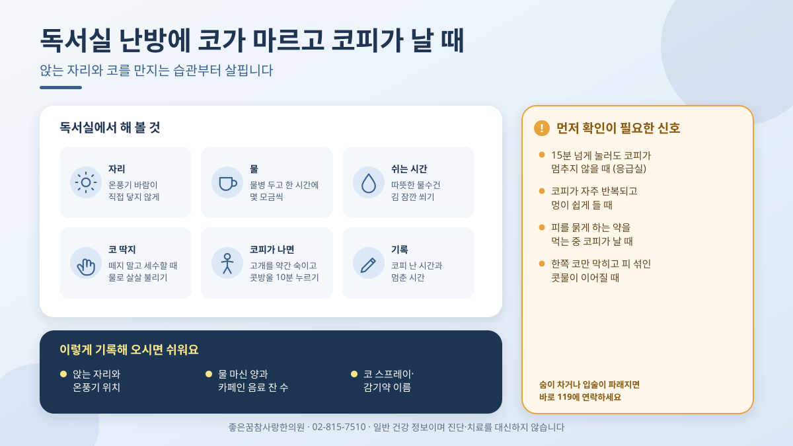

이종호 한의사 감수좋은꿈참사랑한의원 대표원장 (한의사 면허번호 19769)발행 2026-11-25 · 수정 2026-11-26
이 글의 차례
- 왜 이런 불편이 생길 수 있나요
- 건조해서 나는 코피와 다른 코피는 어떻게 구분할까요
- 코피가 났을 때는 이렇게 멈춰 보세요
- 왜 코를 만지는 버릇이 코피를 되풀이하게 할까요
- 먼저 이렇게 여쭙니다
- 일상에서 먼저 해 볼 수 있는 것
- 왜 시험이 가까워질수록 코피가 잦아질까요
- 집에서 코 안을 촉촉하게 지키는 방법
- 독서실 자리와 하루 일과는 이렇게 바꿔 보세요
- 보호자는 무엇을 함께 살펴 주면 좋을까요
- 마스크와 목도리는 어떻게 쓰면 좋을까요
- 상황별 예시
- 스스로 점검해 보세요
- 얼마나 지켜보고 언제 상담할까요
- 한의원에서 함께 살필 수 있는 경우
- 이렇게 기록해 오시면 상담이 쉬워집니다
- 이런 증상은 먼저 확인이 필요합니다
- 함께 읽으면 좋은 글
독서실에서 코가 마르고 코피가 살짝 비친다면, 코 안이 건조해져 약해진 것일 수 있으니 먼저 자리와 습도를 살펴보는 것이 좋습니다. 겨울 노량진의 독서실과 스터디카페는 온풍기가 온종일 돌아가는 곳이 많아, 오후가 되면 코 안이 따갑고 코를 풀 때 피가 묻어난다는 수험생이 많습니다.
예를 들어 아침 아홉 시에 들어가 밤 열 시까지 같은 자리에 앉아 있고, 물은 커피 두 잔이 전부인 날을 떠올려 보세요. 저녁 무렵 코를 풀었을 때 휴지에 붉은 점이 묻어나는 일이 이런 날에 잦습니다. 대부분은 양이 적고 금방 멈춥니다.
그래도 코 안이 계속 마른 채로 지내면 같은 자리에서 피가 되풀이해 비치고, 코가 막히거나 따가워 공부에 집중하기 어려워집니다. 저는 이런 학생들에게 코만 보기보다 앉는 자리와 하루 동안 마시는 물, 잠자는 시간까지 함께 여쭙습니다.
왜 이런 불편이 생길 수 있나요
따뜻한 바람이 계속 나오는 곳에서는 코 안 점막이 쉽게 마릅니다. 코피가 자주 나는 자리는 대개 코 입구 가까운 안쪽 벽인데, 가는 혈관이 모여 있어 마르면 쉽게 터집니다.
여기에 마른 딱지를 손으로 떼거나 무의식적으로 코를 문지르는 버릇, 감기나 비염으로 코를 자주 푸는 일이 더해지면 같은 자리에 상처가 되풀이됩니다.
물 대신 커피나 에너지 음료로 버티며 오래 앉아 있으면 몸 전체도 건조해지기 쉽습니다. 밤늦게까지 공부해 잠이 부족하면 몸의 회복이 더뎌 작은 상처가 잘 아물지 않습니다.
건조해서 나는 코피와 다른 코피는 어떻게 구분할까요
건조해서 나는 코피는 대개 한쪽 코에서 조금 비치고, 콧방울을 눌러 주면 몇 분 안에 멈춥니다. 코를 풀 때 휴지에 피가 묻거나, 마른 딱지를 떼고 난 뒤 피가 비치는 경우가 가장 흔합니다.
- 양쪽 코에서 동시에 많이 흐르거나, 목 뒤로 피가 넘어가는 느낌이 들면 코 안쪽 깊은 곳에서 나는 출혈일 수 있어 병원에서 확인합니다.
- 코피와 함께 한쪽 코만 계속 막히거나 냄새를 잘 못 맡는다면 이비인후과 진료를 함께 권합니다.
- 아스피린처럼 피를 묽게 하는 약을 먹고 있다면 코피가 난다고 스스로 끊지 말고 처방한 의사와 상의하세요. 이런 약을 먹거나 집안에 피가 잘 멈추지 않는 가족이 있다면 진료 때도 꼭 알려 주세요.
이 구분은 스스로 판단하기보다 진료 때 설명하기 쉽게 정리해 두시라는 뜻입니다. 자기 몸에서 언제 무슨 일이 일어나는지 가장 오래 지켜본 사람은 본인입니다. 코피가 날 때마다 어느 쪽 코였는지, 그때 무엇을 하고 있었는지만 적어 두셔도 큰 도움이 됩니다. 코를 풀다 났는지, 가만히 앉아 있다 났는지에 따라 살피는 방향이 달라지기 때문입니다.
코피가 났을 때는 이렇게 멈춰 보세요
- 의자에 똑바로 앉아 고개를 약간 앞으로 숙입니다.
- 엄지와 검지로 콧방울 양옆, 코의 부드러운 부분을 지그시 잡습니다.
- 입으로 숨을 쉬며 10분 정도 누른 채 기다리고, 중간에 손을 떼어 확인하지 않습니다. 그래도 흐르면 같은 방법으로 한 번 더 누릅니다.
- 목으로 넘어온 피는 삼키지 말고 뱉어 냅니다.
- 멈춘 뒤 몇 시간은 코를 세게 풀거나 후비지 않고, 뜨거운 음료와 격한 운동을 잠시 피합니다.
독서실에서 코피가 나면 당황해 휴지를 콧구멍 깊이 밀어 넣는 경우가 많습니다. 휴지를 뺄 때 딱지가 함께 떨어져 다시 피가 날 수 있으니, 눌러서 멈추는 쪽을 먼저 해 보세요. 코피가 멈춘 뒤에는 바로 고개를 숙여 책을 보기보다 몇 분 등을 기대고 쉬었다가 다시 공부를 시작합니다.
왜 코를 만지는 버릇이 코피를 되풀이하게 할까요
코 안이 마르면 딱지가 생기고, 딱지가 생기면 답답해서 자꾸 손이 갑니다. 문제를 풀며 생각에 잠길 때 코를 만지는 버릇이 있는 학생도 많습니다. 딱지를 떼는 순간 아물던 상처가 다시 벌어지고, 그 자리가 또 말라 딱지가 앉는 고리가 생깁니다.
손이 가는 것을 의식하기 어렵다면 책상 위에 작은 메모를 붙여 두거나, 손에 쥘 수 있는 작은 공이나 펜을 곁에 두는 것도 방법입니다. 손을 자주 씻어 두면 코 안 상처를 깨끗하게 지키는 데도 도움이 됩니다.

먼저 이렇게 여쭙니다
- 코피가 얼마나 자주, 얼마나 오래 나나요?
- 온풍기 바람이 얼굴에 직접 닿는 자리인가요?
- 코를 자주 만지거나 딱지를 떼는 편인가요?
- 하루에 물을 얼마나 마시나요?
- 코막힘이나 재채기, 콧물이 함께 있나요?
- 코피가 주로 어느 쪽 코에서 나나요?
- 요즘 잠은 몇 시간쯤 자나요?
- 복용 중인 약이나 영양제가 있나요?
일상에서 먼저 해 볼 수 있는 것
- 온풍기 바람이 직접 닿지 않는 자리로 옮기기
- 책상에 물병을 두고 한 시간에 몇 모금씩 마시기
- 쉬는 시간에 화장실에서 따뜻한 물수건 김을 잠깐 쐬기
- 코 딱지는 떼지 말고 세수할 때 물로 살살 불리기
- 코피가 나면 고개를 약간 숙이고 콧방울을 10분 정도 누르기
왜 시험이 가까워질수록 코피가 잦아질까요
시험이 다가오면 공부 시간은 늘고 잠은 줄어듭니다. 쉬는 시간도 아까워 물 마시러 일어나는 일조차 줄고, 식사는 편의점 도시락이나 빵으로 빠르게 넘기게 됩니다. 이런 생활이 몇 주 이어지면 몸 전체가 마르고 지쳐, 코 안의 작은 상처가 아물 틈이 없어집니다.
긴장이 높을 때 얼굴로 열이 오르고 입이 마르는 느낌을 함께 말하는 학생도 많습니다. 한의학에서는 이런 상태를 몸 위쪽으로 열이 몰리고 물기가 부족해진 모습으로 보고, 코만이 아니라 잠과 긴장, 소화까지 함께 살핍니다.
그래서 시험 기간일수록 하루에 꼭 지킬 것 두세 가지를 정해 두시길 권합니다. 잠드는 시각, 물 마시는 시간, 밥 먹는 시간처럼 작은 것이라도 지켜 두면 몸이 버티는 데 보탬이 됩니다.
좋은꿈참사랑한의원이 진료실에서 늘 붙들고 있는 말이 '잠이 보약'입니다. 잠은 쉬는 시간이기 전에 몸이 회복을 거치는 과정이라, 시험 전날에도 평소와 같은 시각에 잠자리에 드시길 권합니다.
집에서 코 안을 촉촉하게 지키는 방법
- 샤워할 때 따뜻한 김을 천천히 들이마시며 코 안을 적시기
- 세수할 때 손가락에 미지근한 물을 묻혀 코 입구를 살살 적시기
- 잠자는 방에 젖은 수건을 널거나 가습기를 두고, 가습기는 매일 물을 갈기
- 잠들기 전 따뜻한 물이나 보리차를 몇 모금 마시기
- 코를 풀 때는 한쪽씩 막고 살살, 세게 한 번에 풀지 않기
코 안에 바르는 제품이나 식염수 스프레이를 쓰고 싶다면 쓰는 방법이 제품마다 달라 약사나 이비인후과에 먼저 물어보시고, 쓰고 있는 것이 있으면 진료 때 함께 알려 주세요.
독서실 자리와 하루 일과는 이렇게 바꿔 보세요
독서실이나 스터디카페에서는 자리를 고를 수 있다면 온풍기 바로 아래나 바람이 나오는 방향은 피하는 것이 좋습니다. 자리를 옮기기 어렵다면 목도리나 얇은 마스크로 코 주변의 공기가 너무 빨리 마르지 않게 해 보세요.
쉬는 시간마다 자리에서 일어나 복도나 바깥 공기를 잠깐 쐬고, 물을 몇 모금 마시는 것을 습관으로 만듭니다. 한 시간에 한 번 일어나면 몸도 덜 굳고 코 안도 덜 마르기 쉽습니다. 알람을 맞춰 두면 공부에 빠져 쉬는 시간을 잊는 일을 줄일 수 있습니다.
점심이나 저녁을 먹을 때 국물이나 따뜻한 차를 곁들이는 것도 몸의 물기를 채우는 데 보탬이 됩니다.
보호자는 무엇을 함께 살펴 주면 좋을까요
수험생 자녀가 코피가 났다고 말하면 걱정이 앞서 공부를 줄이라는 말부터 나오기 쉽습니다. 하지만 대부분은 생활의 작은 부분을 바꾸면서 지켜볼 수 있어, 먼저 아이가 하루를 어떻게 보내는지 차분히 들어 주세요.
도시락과 함께 물병을 챙겨 주고, 집에 오면 따뜻한 국물이 있는 저녁을 차려 주는 것만으로도 몸의 물기를 채우는 데 도움이 됩니다. 아이 방이 너무 건조하지 않은지, 잠자는 시간이 너무 늦지 않은지도 함께 봐 주세요.
아이가 기록을 귀찮아한다면 코피가 난 날 달력에 점 하나만 찍게 해도 충분합니다. 한 달 사이 횟수가 늘어나는지 줄어드는지 그것만으로도 알 수 있습니다.
마스크와 목도리는 어떻게 쓰면 좋을까요
난방이 강한 실내에서 얇은 마스크를 쓰면 내쉰 숨의 습기가 코 주변에 머물러 덜 마른다고 느끼는 학생이 많습니다. 다만 하루 종일 같은 마스크를 쓰면 안쪽이 축축해지고 답답해지니, 점심과 저녁 무렵 새것으로 바꿔 주세요.
독서실을 오가는 길에는 찬 공기가 코로 바로 들어오지 않도록 목도리로 코와 입 주변을 살짝 덮습니다. 차고 건조한 바깥 공기와 덥고 건조한 실내 공기를 오가는 것 자체가 코 안에 부담이 되기 때문입니다. 실내에 들어오면 따뜻한 물 한 모금으로 목부터 적셔 주세요.
상황별 예시
예를 들어 공무원 시험을 준비하며 낮에는 스터디카페, 밤에는 좁은 방에서 공부하는 분이라면 하루 내내 건조한 난방 바람을 맞기 쉽습니다. 잠자는 방에 젖은 수건 한 장을 널어 두는 것부터 해 볼 수 있습니다.
예를 들어 비염이 있어 하루에도 여러 번 코를 푸는 학생이라면, 코 입구가 헐어 같은 쪽에서만 코피가 되풀이될 수 있습니다. 코를 풀 때는 한쪽씩 살살 풀고, 비염 자체도 함께 살펴보시길 권합니다.
예를 들어 시험이 다가와 밤늦게까지 공부하며 커피를 하루 여러 잔 마시는 경우, 물은 거의 마시지 않아 코와 입이 함께 마를 수 있습니다. 커피 한 잔마다 물 한 컵을 곁들여 보세요.
스스로 점검해 보세요
아래 가운데 해당하는 것을 표시해 보세요. 진단이 아니라 진료 때 이야기를 시작하는 출발점입니다.
- 앉는 자리에 온풍기 바람이 얼굴로 바로 닿는다
- 하루에 마시는 물보다 커피나 에너지 음료가 더 많다
- 코피가 늘 같은 쪽 코에서 난다
- 공부하다 보면 코를 만지거나 딱지를 떼고 있다
- 코 안이 따갑거나 답답해 공부 중에 자꾸 신경이 쓰인다
- 잠드는 시각이 날마다 두 시간 넘게 달라진다
얼마나 지켜보고 언제 상담할까요
자리와 물 마시는 습관을 바꾸고 한두 주 사이 코피가 비치는 날이 줄어든다면 지금처럼 지켜보셔도 됩니다.
두 주가 지나도 코가 계속 막히고 따갑다면 진료에서 확인해 보시길 권합니다. 코피가 같은 쪽에서만 되풀이된다면 이비인후과에서 코 안을 함께 확인해 보세요.
시험이 끝날 때까지 참고 미루기보다 작게 불편할 때 물어봐 주세요. 크게 키운 뒤에 오시면 본인이 가장 힘듭니다.
한의원에서 함께 살필 수 있는 경우
- 겨울마다 코가 마르고 막히는 일이 반복되는 경우 코의 상태와 생활 환경을 함께 살핍니다.
- 코 건조와 함께 목이 칼칼하고 마른기침이 나는 경우 호흡기 전체의 건조함을 함께 살핍니다.
- 잠이 부족하고 피로가 쌓인 경우 하루 리듬도 이어서 여쭙니다.
좋은꿈참사랑한의원에서는 모든 분께 맥부터 짚으며 증상이 심해지는 시간과 장소를 여쭙고, 필요하다고 판단될 때 설진을 더해 몸 상태를 살핀 뒤, 상태에 맞춰 침이나 한약 상담 등을 정합니다. 독서실에서 서둘러 오셨다면 잠시 숨을 고른 뒤 맥을 짚습니다. 미성년 학생은 보호자와 함께 이야기를 나눕니다.
설진에서 혀끝과 앞쪽에 붉은 점이 평소보다 빽빽하게 보이면 잠드는 시각과 방의 건조한 정도를 함께 여쭙습니다. 혀 모습은 진맥·문진과 함께 보는 참고일 뿐 진단을 대신하지 않습니다.
오래 앉아 공부하는 학생이라면 코 말고도 목·어깨·허리의 뻐근함과 잠 문제를 함께 여쭙습니다. 귀가 전에는 집에서 지켜볼 점을 알려 드립니다.

이렇게 기록해 오시면 상담이 쉬워집니다
- 코피가 난 날짜와 시간, 난 쪽(왼쪽·오른쪽·양쪽), 멈추기까지 걸린 시간
- 코를 만지거나 세게 푼 뒤였는지
- 앉는 자리와 온풍기 위치
- 하루 물 마신 양과 카페인 음료 잔 수
- 쓰고 있는 코 스프레이나 감기약, 복용 중인 약 이름
- 잠든 시각과 일어난 시각
시험을 앞두고 몸까지 챙기기는 쉽지 않은데, 여기까지 읽으신 것만으로도 애쓰고 계신 겁니다. 다음에 오시면 지난주 코피가 며칠, 어느 쪽에서 났는지부터 여쭙겠습니다.
이런 증상은 먼저 확인이 필요합니다
- 20분 넘게 눌러도 코피가 멈추지 않는 경우
- 코피가 자주 반복되거나, 잇몸 출혈·쉽게 드는 멍이 함께 있는 경우
이런 신호가 있으면 한의원보다 가까운 병원이나 응급실을 먼저 찾으세요.
함께 읽으면 좋은 글

여쭙는 것
- 코피가 얼마나 자주, 얼마나 오래 나나요?
- 온풍기 바람이 얼굴에 직접 닿는 자리인가요?
- 코를 자주 만지거나 딱지를 떼는 편인가요?
생활에서 해 볼 것
- 온풍기 바람이 직접 닿지 않는 자리로 옮기기
- 책상에 물병을 두고 한 시간에 몇 모금씩 마시기
- 쉬는 시간에 화장실에서 따뜻한 물수건 김을 잠깐 쐬기
한의원에서 함께 살필 것
- 겨울마다 코가 마르고 막히는 일이 반복되는 경우 코의 상태와 생활 환경을 함께 살핍…
- 코 건조와 함께 목이 칼칼하고 마른기침이 나는 경우 호흡기 전체의 건조함을 함께 살…
- 잠이 부족하고 피로가 쌓인 경우 하루 리듬도 이어서 여쭙니다.
먼저 확인이 필요한 신호
- 20분 넘게 눌러도 코피가 멈추지 않는 경우
- 코피가 자주 반복되거나, 잇몸 출혈·쉽게 드는 멍이 함께 있는 경우
한눈에 보는 표
| 구분 | 핵심 |
|---|---|
| 여쭙는 것 | 코피가 얼마나 자주, 얼마나 오래 나나요? 온풍기 바람이 얼굴에 직접 닿는 자리인가요? |
| 생활에서 해 볼 것 | 온풍기 바람이 직접 닿지 않는 자리로 옮기기 책상에 물병을 두고 한 시간에 몇 모금씩 마시기 |
| 한의원에서 함께 살필 것 | 겨울마다 코가 마르고 막히는 일이 반복되는 경우 코의 상태와 생활 환경을 함께 살핍니다. 코 건조와 함께 목이 칼칼하고 마른기침이 나는 경우 호흡기 전체의 건조함을 함께 살핍니다. |
| 먼저 확인이 필요한 신호 | 20분 넘게 눌러도 코피가 멈추지 않는 경우 코피가 자주 반복되거나, 잇몸 출혈·쉽게 드는 멍이 함께 있는 경우 |
자주 묻는 질문
코피가 나면 고개를 뒤로 젖히나요?
뒤로 젖히면 피가 목으로 넘어갈 수 있습니다. 고개를 약간 숙이고 콧방울을 눌러 주세요.
마스크를 쓰면 덜 건조한가요?
내쉰 숨의 습기가 머물러 덜 마르다고 느끼는 분이 많습니다. 답답하지 않은 범위에서 써 보세요.
시험이 얼마 안 남았는데 한의원에 다녀도 되나요?
다음 방문은 공부 일정에 맞춰 함께 정합니다. 진료 시간은 평일 09:30~20:00(점심 13:00~14:00), 토·일·공휴일 09:30~15:00이고, 원장별 일정은 방문 전 전화(02-815-7510)로 확인해 주세요. 코피 기록과 하루 일과를 적어 오시면 이야기가 빨라집니다.
좋은꿈참사랑한의원은 재진 때 지난번 이야기부터 이어서 여쭙니다. 진료시간과 예약은 오시는 길에서 확인하세요.
어디서 상담받을 수 있나요?
좋은꿈참사랑한의원은 서울 동작구 만양로2길 2 신성빌딩 3층·5층(서울 동작구 상도동, 7호선 상도역 3번 출구 근처)에 있습니다. 한의사 3명(이종호 대표원장, 조영기 수석진료원장, 정원영 진료원장)이 진료합니다. 진료시간은 평일 09:30~20:00(점심 13:00~14:00), 토·일·공휴일 09:30~15:00이며, 방문 전 전화로 확인을 권합니다. 예약은 네이버 예약, 카카오톡 상담, 전화 02-815-7510로 받습니다.
이 글은 일반적인 건강 정보이며 개인의 진단이나 치료를 대신하지 않습니다. 증상이 있거나 복용 중인 약이 있다면 진료를 통해 확인하세요. 치료 효과는 개인마다 다를 수 있습니다.
작성 기준: 일반적으로 알려져 있는 건강 정보를 참고해 정리했습니다(대표원장 감수). 증상 기록은 1~2주 동안 하루 1회, 비슷한 시간에 적어 오시면 지난 상태와 비교하기 쉽습니다.